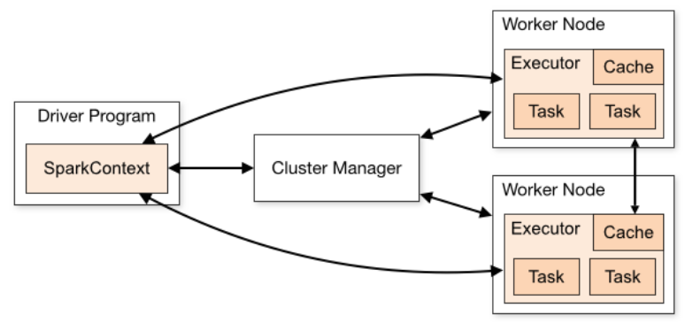

Definition: Apache Spark is an Open source analytical processing engine for large-scale powerful distributed data processing and machine learning applications.
Apache Spark 3.5 is a framework that is supported in Scala, Python, R Programming, and Java. Below are different implementations of Spark.
Spark - Default interface for Scala and Java
PySpark – Python interface for Spark
SparklyR – R interface for Spark.
Features of Apache Spark:
In-memory computation
Distributed processing using parallelize
Can be used with many cluster managers (Spark, Yarn, Mesos e.t.c)
Fault-tolerant
Immutable
Lazy evaluation
Cache & persistence
Inbuild-optimization when using DataFrames
Supports ANSI SQL
Advantages of Apache Spark:
Spark is a general-purpose, in-memory, fault-tolerant, distributed processing engine that allows you to process data efficiently in a distributed fashion.
Applications running on Spark are 100x faster than traditional systems.
There are so many benefits from using Spark for data ingestion pipelines.
Using Spark we can process data from Hadoop HDFS, AWS S3, Databricks DBFS, Azure Blob Storage, and many file systems.
Spark also is used to process real-time data using Streaming and Kafka.
Using Spark Streaming you can also stream files from the file system and also stream from the socket.
Spark natively has machine learning and graph libraries.
Provides connectors to store the data in NoSQL databases like MongoDB.
Apache Spark Architecture:
Spark works in a master-slave architecture where the master is called the “Driver” and slaves are called “Workers”. When you run a Spark application, Spark Driver creates a context that is an entry point to your application, and all operations (transformations and actions) are executed on worker nodes, and the resources are managed by Cluster Manager.

Cluster Manager Types: Standalone, Apache Mesos, Hadoop YARN, Kubernetes, local (for master() in order to run Spark on local computer).
Spark Core: Spark Core is the main base library of Spark which provides the abstraction of how distributed task dispatching, scheduling, basic I/O functionalities etc.
SparkSession: It is an entry point to underlying Spark functionality in order to programmetically use Spark RDD, DataFrame, and Dataset. It's object spark is default available in spark-shell.
The initial step in a Spark program involving RDDs, DataFrames, or Datasets would be to create a SparkSession instance. The Sparksession will be created using SparkSession.builder().
from pyspark.sql import SparkSession
# Create a SparkSession object
spark = SparkSession.builder \
.appName("YourAppName") \
.master("local[*]") \
.getOrCreate()
spark # to call spark
If you're using SparkSession, which is the entry point to Spark SQL, you can work with DataFrames and Datasets, which provide higher-level abstractions and optimizations compared to RDDs.
Here are some common tasks you can perform with SparkSession:
Read and write data: SparkSession provides methods to read data from various sources such as Parquet, JSON, CSV, JDBC, Avro, ORC, and many more. Similarly, you can write data to different formats and locations.
For example:df = spark.read.csv("file.csv") and df.write.parquet("output.parquet")
Create DataFrames: You can create DataFrames from existing RDDs, lists, dictionaries, or by applying transformations on other DataFrames. For example:
SQL queries: SparkSession allows you to run SQL queries on DataFrames using the sql() method. For example:
df.createOrReplaceTempView("people")
result = spark.sql("SELECT * FROM people WHERE age > 20")
DataFrame operations: You can perform various operations on DataFrames like select(), filter(), join(), orderBy(), agg() etc. For example:
result = df.select("name").filter(df.age > 20).orderBy(df.name)
Window functions: You can use window functions for advanced analytics tasks like ranking, lead/lag analysis, etc. For example:
from pyspark.sql.window import Window
from pyspark.sql.functions import rank
window = Window.partitionBy("department").orderBy("salary")
result = df.withColumn("rank", rank().over(window))
Machine learning: We can use Spark MLlib, a scalable machine learning library, to train and apply machine learning models on DataFrames. For example:
from pyspark.ml.classification import LogisticRegression
lr = LogisticRegression(featuresCol="features", labelCol="label")
model = lr.fit(train_data)
predictions = model.transform(test_data)
Streaming data:We can process streaming data using Spark Structured Streaming, which provides high-level APIs for streaming processing. For example:
Spark Context: It is also a entry point to Spark and PySpark. Before SparkSession 2.0, it was the main entry point.
Creating SparkContext was the first step to the program with RDD and to connect to Spark Cluster. It’s object sc by default available in spark-shell.
Since Spark 2.0, when we create SparkSession, SparkContext object is by default created and it can be accessed using spark.sparkContext.
from pyspark.sql import SparkSession
# Create a SparkSession
spark = SparkSession.builder \
.appName("YourAppName") \
.master("local[*]") \
.getOrCreate()
# Access the SparkContext from the SparkSession
sc = spark.sparkContext
Once the spark context is created, we can do following things:
Parallelize data: We can parallelize an existing collection in your driver program (e.g., a list or array) using the parallelize() method. This will distribute the data across the nodes in your Spark cluster and create an RDD. rdd = sc.parallelize(data)
Read data from external sources: We can read data from various external sources such as HDFS, S3, HBase, or any supported data source using the methods provided by SparkContext, such as textFile() for reading text files.text_rdd = sc.textFile("hdfs://path/to/file.txt")
Transformations: can perform various transformations on RDDs, such as map(), filter(), flatMap(), reduceByKey(), etc., to process and manipulate the data. For example: squared_rdd = rdd.map(lambda x: x * x)
Caching: We can cache RDDs in memory to speed up iterative or interactive computations by using the cache() method. For example: rdd.cache()
Accumulators: We can can use accumulators to aggregate information across all tasks, such as counting occurrences of certain events. For example: accumulator = sc.accumulator(0).
Difference between SparkContext and SparkSession
SparkContext (sc):
SparkContext is the entry point to Spark functionality and represents the connection to a Spark cluster. It coordinates the execution of operations on the cluster.
It provides access to the underlying Spark functionality, including RDDs (Resilient Distributed Datasets), which are the fundamental data abstraction in Spark.
SparkContext is primarily used for low-level operations and interactions with RDDs, such as creating RDDs, performing transformations, and executing actions.
SparkSession (spark):
SparkSession, introduced in Spark 2.x, is a higher-level abstraction on top of SparkContext and provides a unified entry point to Spark SQL, DataFrame, and Dataset APIs.
It is the recommended way to interact with Spark in modern Spark applications, as it provides a more user-friendly and consistent interface for working with structured data.
SparkSession encapsulates SparkContext and provides additional functionalities, including reading and writing structured data from various sources, running SQL queries, and performing DataFrame operations.
SparkSession also manages the underlying SparkContext internally, so there's no need to create a SparkContext explicitly when using SparkSession.
In summary, while SparkContext is primarily focused on low-level distributed computing operations with RDDs, SparkSession provides a higher-level interface for working with structured data, including DataFrames and Datasets, as well as integrating with Spark SQL, MLlib, and other Spark components. It's generally recommended to use SparkSession for modern Spark applications unless you have specific requirements that necessitate working directly with RDDs and SparkContext.
RDD's - Resilient Distributed Datasets
The RDD structure is the elementary structure of Spark. It is flexible and optimal in performance for any linear operation. However, this structure has limited performance when it comes to non-linear operations, which is why we will introduce the DataFrame structure in the following exercise.
A good reference for the pyspark can be found at Link. Another link with some
good examples can be found at Link.
For databricks, you can look at tutorial videos on youtube at youtube video by Bryan Cafferky,
writer of the book "Master Azure Databricks". A great playlist for someone who just want to learn about the big data analytics at Databricks Azure cloud platform.